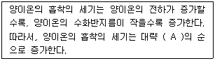
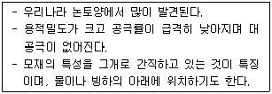
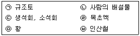

1과목: 재배원론
1. 종자의 발아와 휴면에 대하여 올바르게 기술한 것은?
2. 다음 중 변온에 대한 설명으로 옳은 것은?
3. 세포분열을 촉진하는 물질로서 잎의 생장촉진, 호흡억제, 엽록소와 단백질의 분해억제, 노화방지 및 저장 중의 신선도 증진 등의 효과가 있는 물질은?
4. 식물 생장조절제 에틸렌의 농업적 이용이 아닌 것은?
5. 환경에 의한 변이는 유전하지 않으나 원인불명이지만 유전하는 변이도 있는데, 이것을 돌연변이라 한다. 이 학설을 주창한 사람은?
6. 식물체 내의 수분포텐셜을 올바르게 설명한 것은?
7. 식물체의 붕소 결핍 증상이 아닌 것은?
8. 다음 중 하고현상을 일으키지 않는 목초는?
9. 우리나라 밭 토양의 양이온치환용량은 10.5이고, k+은 0.4, Ca+2은 3.5, Mg+2은 1.4me/100이었다. 우리나라 밭 토양의 평균 염기포화도는?
10. 다음 중 토양반응의 미산성에 해당하는 pH 범위는?
11. 밀 게놈 조성 중 ABD에 속하는 것으로만 이루어진 것은?
12. 비료 및 시비에 대한 설명으로 맞는 것은?
13. 토양 수분 중 작물이 흡수할 수 없는 수분은?
14. 재배종과 야생종의 특징을 바르게 설명한 것은?
15. 개화유도물질(A)과 발아억제물질(B)이 각각 올바르게 연결된 것은?
16. 종자의 퇴화와 채종에 대한 설명으로 옳은 것은?
17. 토양의 양이온치환용량에 대한 설명으로 맞는 것은?
18. 우리나라의 작물재배 특색을 가장 잘 나타낸 것은?
19. 광합성에서 산소발생을 수반하는 광화학반응에 촉매작용을 하는 무기원소는?
20. 다음 중 식물학상 종자에 해당되는 것은?
2과목: 토양비옥도 및 관리
21. 다음 미생물 중 산성토양에서 가장 잘 생육하는 것은?
22. 토양용액의 pH 변화에 영향을 받지 않는 전하를 가장 많이 가지고 있는 광물은?
23. 부식에 대한 설명으로 맞지 않는 것은?
24. 1차 광물로서 지각을 구성하는 화성암의 6대 조암 광물을 올바르게 나열한 것은?
25. 식물에 이용되는 유효수분으로 토양입자 시이의 작은 공극안에 표면 장력에 의하여 흡수·유지되어 있는 토양수는?
26. 건조한 토양을 기준하여 지렁이 한 마리가 소화시키는 토양의 양이 연간 0.1톤일 경우, 용적밀도가 1.2g/cm3인 10a 표층토양 10cm를 소화시키는데 소요되는 시간은?
27. 입자밀도가 2.60g/cm3, 전용적밀도가 1.30g/cm3인 토양의 공극률은?
28. 퇴비의 부숙도 검사 중 생물판정법이 아닌 것은?
29. 다음 설명 중 (A)에 알맞은 용어는?

30. 혐기성균에 의해서만 일어날 수 있는 질소대사는?
31. 산화철(Fe2O3)에 수화도가 높은 경우 토양색깔은 어느 쪽에 가까운가?
32. 균근균과 공생함으로써 식물이 얻을 수 있는 유익한 점이 아닌 것은?
33. 다음 비료 중 화학적 반응(pH)과 생리적 반응(pH) 모두 알칼리성인 것으로 짝지어진 것은?
34. 다음 중 토양수분의 측정방법이 아닌 것은?
35. 다음 설명에 해당하는 토양구조는?

36. 토양에서 일어나는 질소순환에 대한 설명으로 옳은 것은?
37. 시설토양에 대한 설명으로 가장 거리가 먼 것은?
38. 화성암을 산성암, 중성암, 염기성암으로 구별할 때 기준이 되는 성분은?
39. 토양 단면의 층위에 대한 설명 중 틀린 것은?
40. 최근의 경작지 비배관리는 주로 복합비료 시비에 의존하고 있는데 이 때 흔히 부족하게 될 수 있는 성분은?
3과목: 유기농업개론
41. 토양 전기전도도가 높다는 것은 무엇을 의미하는가?
42. 환경친화적 작물시비의 목적으로 틀린 것은?
43. 다음 중 심백미(A), 청미(B), 동할미(C), 반점미(D)를 일으키는 해충과 바르게 연결되지 않은 것은?
44. 유기가축의 번식생리에서 암 가축의 뇌하수체전염에서 분비되는 호르몬으로 난포의 발육과 난모세포의 성숙을 촉진시키는 호르몬은?
45. 페로몬(pheromone)의 특징으로 볼 수 없는 것은?
46. 병충해의 천적 보존과 밀도유지를 위한 방법이 아닌 것은?
47. 다음 중 보온효율을 특별히 높이 특수 온실은?
48. 유기축산에서 중요한 질병의 조기발견을 위한 이상증세로 가장 거리가 먼 것은?
49. 벼의 전체 생육기간 중 요구되는 적산온도 법위로 가장 적합한 것은?
50. 퇴비를 판정하는 검사방법이 아닌 것은?
51. 유기축산 젓소관리에서 착유우의 이상적인 건유기간은 며칠 정도가 적당한가?
52. 국화과의 식물로 꽃이 피기 위해서는 서늘한 온대 기후가 알맞기 때문에 열대지방에서는 산간지역에 재배하여 건조한 꽃에서 추출하여 살충제로 사용하는 물질은?
53. 무항생제 농가인 길동농장이 육계 병아리를 5월 1일 입식하였다면 언제부터 출하하는 경우에 무항생제 육계(식육)로 인증이 가능한가? (단, 삼계탕용 육계이다.)
54. 소나 돼지와 같은 우제류에 발생하는 심각한 전염병인 구제역의 병원체 종류는?
55. 가축분 퇴비 시용시 어떤 성분을 기준으로 시비량을 결정하여야 하는가?
56. 병해충종합관리(IPM)에 병해충의 밀도를 허용 가능한 피해수준 이하로 억제하기 위한 전략으로 틀린 것은?
57. 가축이 섭취한 사료는 고분자에서 저분자로 분해되어 소장을 통해 혈액으로 흡수·이용된다. 영양소와 가축의 소화기관에서 분해되어 흡수되는 저분자 영양소로 잘못 연결한 것은?
58. 일반 경종농업에 비하여 축산의 유리한 점에 해당하지 않는 것은?
59. 잡종강세에 대한 설명으로 틀린 것은?
60. 성숙한 배낭 내 난세포의 수와 그 핵상으로 옳은 것은?
4과목: 유기식품 가공.유통론
61. 기구나 용기·포장을 사용하지 않더라도 낱개로 채취할 수 있는 식품 등을 무엇이라고 하는가?
62. 시판되는 우유 제조 시 균질을 하는 주된 이유는?
63. 육류를 덜 익은 것 또는 날것을 육회로 섭취함으로써 인체에 감염되는 기생충이 아닌 것은?
64. 맥각 중독을 일으키는 성분은?
65. 식중독을 일으키는 세균과 거리가 먼 것은?
66. 농산물 표준규격에 근거하여 토마토의 표준거래단위에 해당하지 않는 것은? (단, 5kg이상을 기준으로 한다.)
67. 마케팅 믹스(4P's 전략)에 해당되지 않는 것은?
68. 세균성 식중독 중 독소형에 속하는 것은?
69. 버터 제조 공정 순서가 옳은 것은?
70. 상업적 살균(commercial sterilzation)에 대한 설명으로 옳은 것은?
71. 포도주 제조과정에서 아황산염을 첨가하는 이유는?
72. 포장 재료인 유리의 단점이 아닌 것은?
73. 다음 중 식물성 자연독의 연결이 틀린 것은?
74. 유기가공식품 생산 시 밀가루에 사용되는 식품첨가물은?
75. 제품의 브랜드가 가지는 기능과 거리가 먼 것은?
76. 일정한 온도에서 식품을 12분 가열하여 세균수를 105CFU/mL에서 102CFU/mL로 낮추었을 때 D값은?
77. 식품의 저장을 위한 가공방법 중 가열처리 방법은?
78. 농수산물 유통 시 고려해야 하는 특성이 아닌 것은?
79. 유기농 오이 10kg 한 상자의 생산자가격이 10,000원이고, 유통마진율이 20%라고 할 때 소비자가격은 얼마인가?
80. 식품의 냉장 보관 시 고려해야 할 사항으로 틀린 것은?
5과목: 유기농업관련 규정
81. 유기식품 등에 사용가능한 물질 중 토양개량과 작물생육을 위하여 사용이 가능한 자재만 고른 것은?

82. 친환경관련법상 유기축산물에 관한 설명으로 틀린 것은?
83. [농림축산식품부 소관 친환경농어업 육성 및 유기식품 등의 관리·지원에 관한 법률 시행규칙]에서 규정하고 있는 무항생제 축산물의 인증기준으로 틀린 것은?
84. 친환경농산물 취급자 인증의 원료관리 및 취급방법에서 유기농산물을 무농약농산물로 혼합한 경우 최종 제품의 알맞은 표시는?
85. 무항생제 가축에 대한 질병관리와 구비 요건에 적합하지 않는 것은?
86. [친환경농어업 육성 및 유기식품 등의 관리·지원에 관한 법률]에서 규정한 벌칙 대상에 해당되지 않는 것은?
87. [농림축산식품부 소관 친환경농어업 육성 및 유기식품 등의 관리·지원에 관한 법률 시행규칙]에서 규정하고 있는 인증취소 등 행정처분의 기준 및 절차 중 해당 인증품의 인증표시를 제가하는 경우는?
88. 친환경농산물 취급자 인증부가기준에 적합하지 않은 것은?
89. 유기농산물 인증기준으로 틀린 것은? (단, 친환경농축산물 및 유기식품 등의 인증에 관한 세부실시 요령을 적용한다.)
90. 일반가축을 유기축산으로 전환하려는 경우, 예외로 육성축 및 성축의 전환을 인정할 경우가 아닌 것은? (단, 친환경농축산물 및 유기식품 등의 인증에 관한 세부실시 요령을 기준으로 한다.)
91. 무농농산물인증의 유료기간은?
92. 유기가축의 사료에 첨가할 수 있는 물질에 대한 설명으로 옳은 것은?
93. 유기식품 등의 유기표시 기준에 대한 설명으로 옳은 것은?
94. 허용물질 선정 기준에 대한 설명으로 틀린 것은?
95. [농림축산식품부 소관 친환경농어업 육성 및 유기식품 등의 관리·지원에 관한 법률 시행규칙] 상 유기농산물에 잔류농약은 검출되지 아니하여야 하나 예외적인 허용에 해당되지 않는 것은?
96. [농림축산식품부 소관 친환경농어업 육성 및 유기식품 등의 관리·지원에 관한 법률 시행규칙]에서 규정하고 있는 인증심사원의 자격을 취소하여야 하는 경우가 아닌 것은?
97. 친환경농산물 인증기관의 준수사항에 대한 설명으로 틀린 것은?
98. [농림축산식품부 소관 친환경농어업 육성 및 유기식품 등의 관리·지원에 관한 법률 시행규칙]에서 규정하고 있는 비식용유기가공식품 유기사료의 포장재 및 용기에 함유되어도 가능한 것은?
99. 비식용유기가공품의 가공방법에 대한 설명으로 틀린 것은?
100. 무농약농산뭄 인증기준으로 틀린 것은?